Instrucciones
Para jugar deberás registrar un usuario y contraseña, para luego ingresar con el mismo y poder acceder a realizar las predicciones. Elije un grupo y a continuación selecciona el resultado de cada partido del grupo, luego continua con el siguiente grupo hasta completar el calendario de fases inicial de la Copa del Mundo Qatar 2022. Una vez finalizado, no te olvides de guardar tu predicción con el botón correspondiente.
Login
Usuario
Contraseña
👁Estadísticas
Aqui podrás ver las estadísticas de todas las prediccones que se van realizando, la cantidad de usuarios que las realizaron y los aciertos y errores a medida que los partidos se vayan concretando.
Usuarios Registrados
Predicciones
Aciertos
Errores
Curiosidades de los Grupos

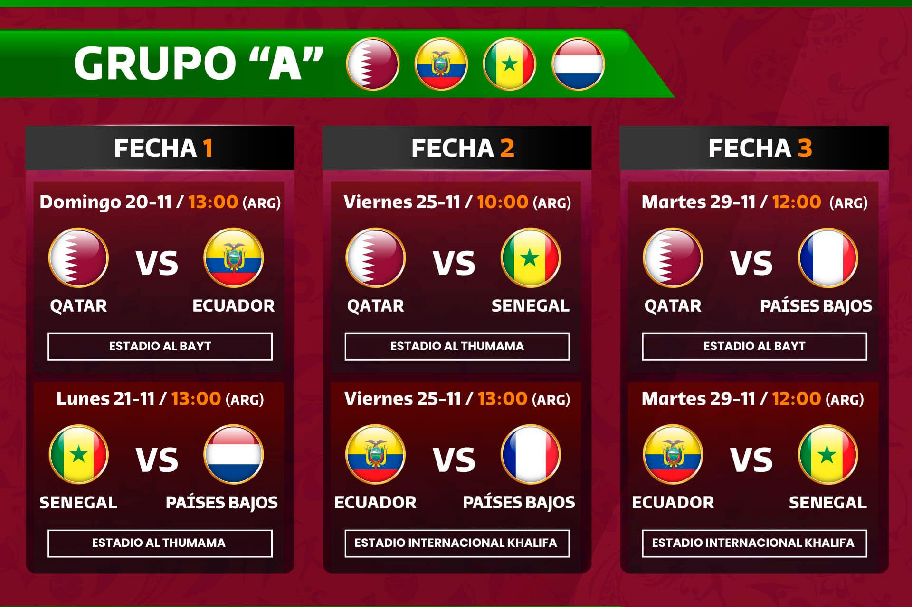
GRUPO A.
* Tenemos a Países Bajos como los favoritos del Grupo A, que han logrado volver al Mundial de la
mano
de Louis Van Gaal. Además, cuenta con uno de los mejores defensas del mundo, Virgil Van Dijk.
* Los qataríes, como anfitriones, salidos de la nada, se han colocado como los mejores de
Asia.
* Ecuador se compone de un equipo de lleno de nuevos talentos, los cuales han demostrado
gran
potencial. Sin embargo, estuvieron a punto de perder su pase a esta Copa del Mundo.
* Senegal posee una estructura que goza de jugadores top en Europa.
* Los ganadores de este grupo se enfrentarán a los clasificados del grupo B en la siguiente
ronda.
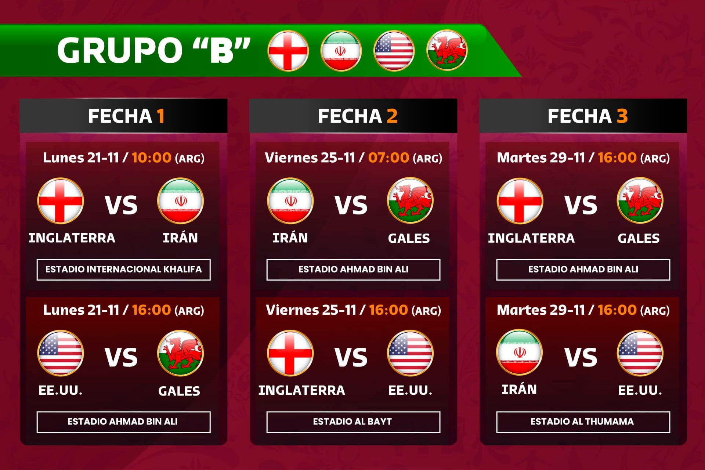
GRUPO B.
* Los ingleses tiene la aspiración de demostrar de alto nivel y conquistar la Copa del Mundo.
* Irán es el equipo asiático que posee más registros de defensa-ataque.
* Christian Pulisic, es considerado un talento de gran versatilidad para Estados Unidos.
* El equipo estadounidense viene de conquistar los títulos de la Nations League de la
CONCACAF 2020 y la Copa de Oro 2021.
* Los clasificados del Grupo B se enfrentarán con los clasificados del grupo A en octavos
de final.
* Esta, probablemente, será la única oportunidad del galés Gareth Bale de jugar una Copa
del Mundo.
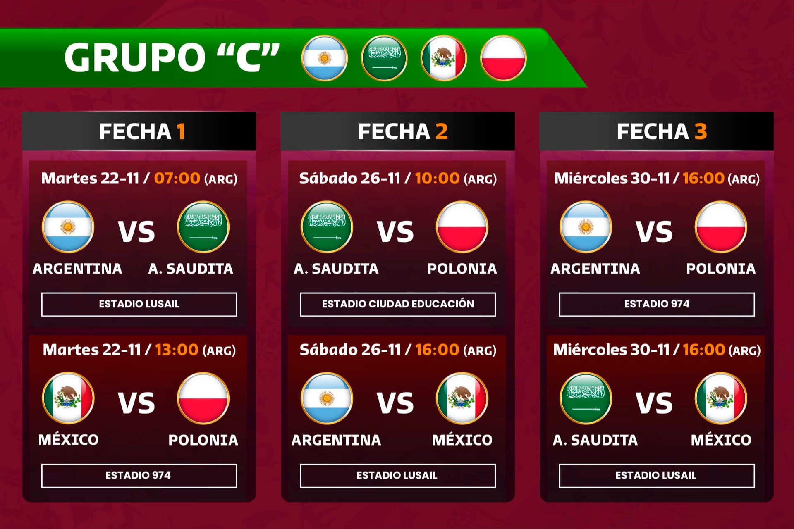
GRUPO C.
* La selección de Argentina no sólo es la favorita para ganar el grupo C, sino también del
campeonato mundial de Qatar. Según el ranking mundial de la FIFA, Argentina ocupa el lugar 4.
* El equipo de Polonia ha participado en 8 campeonatos mundiales en toda su historia y ha
conseguido el tercer lugar en 3 mundiales.
* La selección de Polonia no pudo calificar directamente a Qatar 2022, tuvo que hacerlo en
repechaje al vencer a Suecia 2 goles a 0.
* En Qatar 2022 se enfrentarán por primera vez en la historia de los mundiales, las
selecciones de México y Arabia Saudita.
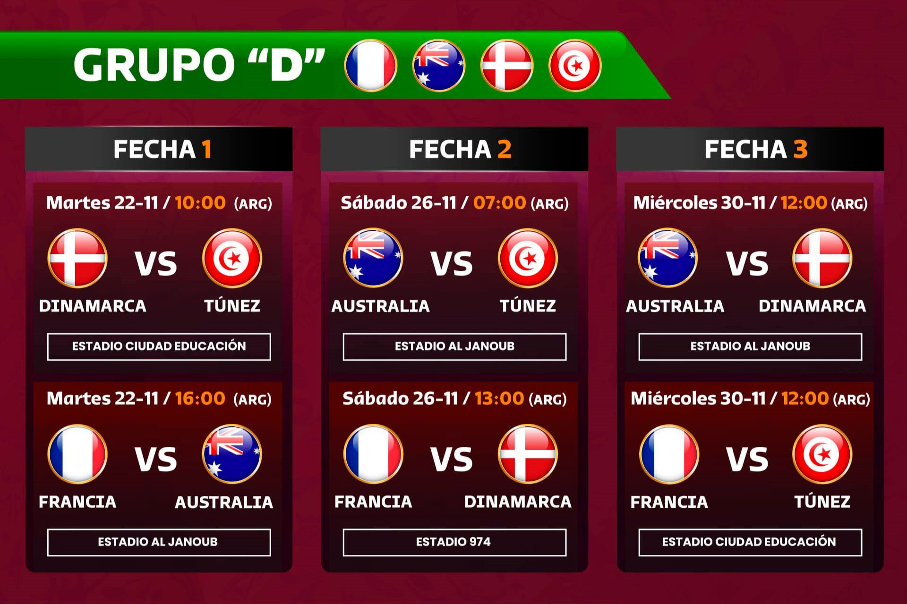
GRUPO D.
* Francia va por su revancha tras el fracaso sucedido en la más reciente Eurocopa, en donde cayó
eliminado por Suiza en 8vos de final.
* Túnez va en busca de superar la fase de grupos por primera ocasión en su historia, Qatar
2022 será el sexto mundial en el que participarán.
* Dinamarca tendrá de regreso a su figura Cristian Eriksen tras el paro cardiaco que sufrió
en la Eurocopa pasada, además cuenta con buenos futbolistas como: Christensen, Poulsen, Wass y
Hojberg que ilusionan a toda una nación.
* Australia jugará su sexta Copa del Mundo, la tercera consecutiva al haber estado presente
en Brasil 2014 y Rusia 2018.
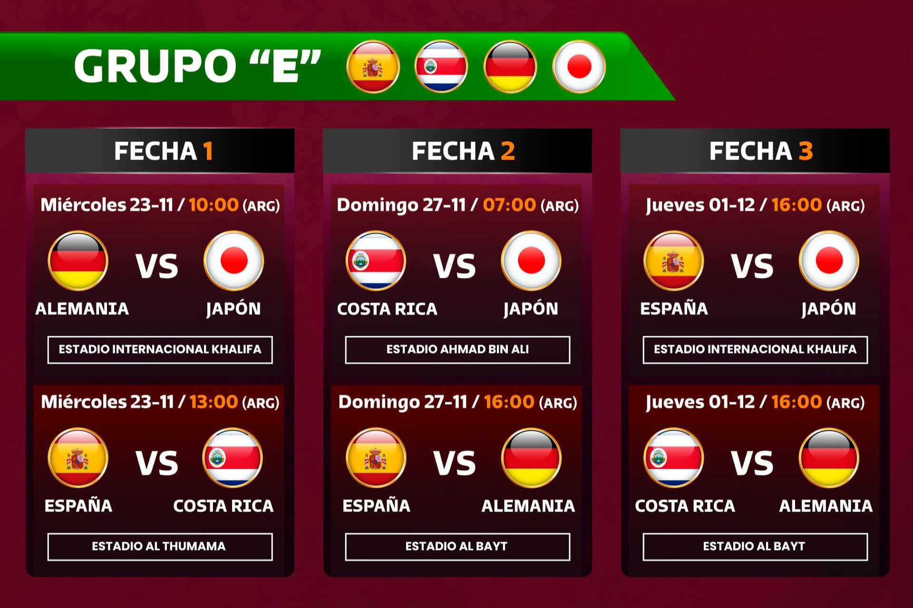
GRUPO E.
* Thomas Muller buscará aumentar su cuota goleadora en mundiales para escalar en la lista de máximos
rompe redes. En este momento tiene 10 anotaciones, con 2 más, superará a Pelé como el quinto mejor
goleador en la historia de este torneo.
* Japón tratará de al menos igualar o superar su actuación de Rusia 2018, en donde llegó
hasta los octavos de final.
* Japón nunca se ha enfrentado a Alemania ni a España en una Copa del Mundo.
* Esta será la cuarta vez que España y Alemania se enfrenten en la fase de grupos de una
Copa del Mundo.
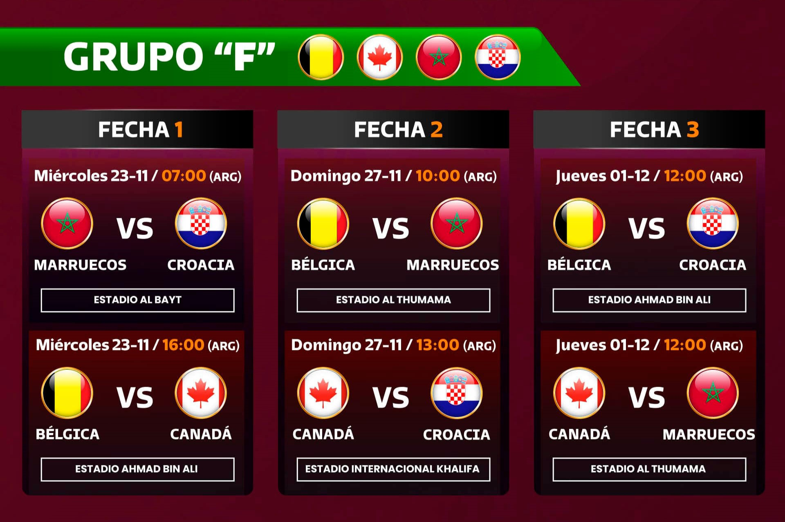
GRUPO F.
* La selección nacional de Canadá, vivirá apenas su segunda participación en un mundial de fútbol y
la primera desde México 1986.
* A pesar de que Croacia es el subcampeón mundial, Bélgica ocupa el segundo sitio del
ranking FIFA, únicamente por debajo de Brasil.
* Croacia buscará revalidar su etiqueta como contendiente al título mundial, tras quedarse
en la final de Rusia 2018.
* El combinado de Marruecos buscará su tercer triunfo en un Mundial, cuestión que no logra
desde el lejano torneo de México del año de 1986.
* Bélgica tratará de superar su actuación de Rusia 2018, en donde llegó hasta semifinales y
cayó con Francia, para después quedarse con el tercer puesto tras vencer a Inglaterra.
* La figura del Bayern Múnich, Alfonso Davies lidera el equipo canadiense que buscará
sorprender a propios y extraños con un técnico que además presume haber dirigido tanto al equipo
varonil como femenil dentro de su historia.
* Hakimi, En- Nesyri y Amrabat son las figuras que comandan al combinado marroquí, todos
ellos juegan en clubes europeos.
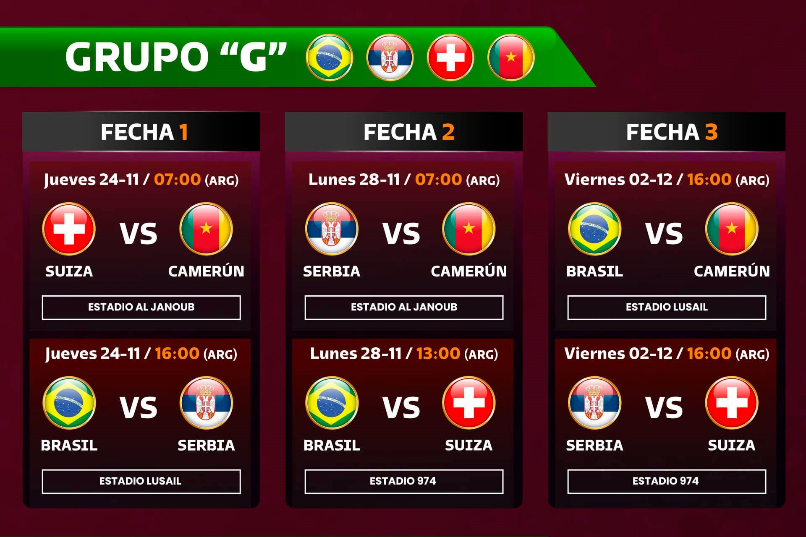
GRUPO G.
* Brasil, Suiza y Serbia se volverán a ver las caras por segundo mundial consecutivo, luego de haber
compartido grupo en Rusia 2018, en donde los cariocas y los suizos avanzaron a octavos de final.
* Serbia llega como una grata sorpresa a este mundial y sin duda será un rival muy difícil
de superar. Hay que recordar que clasificó de manera directa al torneo por encima del combinado de
Portugal.
* Brasil ocupa el lugar número 1 del ranking FIFA y al contar con astros como Neymar,
Vinicius, Allison, Casemiro y Fabinho entre otros, es para muchos el candidato idóneo para llevarse
la copa mundial.
* Camerún clasificó de forma agónica tras empatar con Argelia al minuto 120 y acceder por
goles de visitante. Ahora con sus figuras europeas, Onana, Ekambi, Aboubakar y Mouting sueñan con
volver a destacarse en un Mundial.
* Suiza llega con hambre de trascender en este Mundial, por lo que buscará superar su
actuación de la edición pasada, en donde se quedó en octavos de final, eliminado a manos de Suecia.
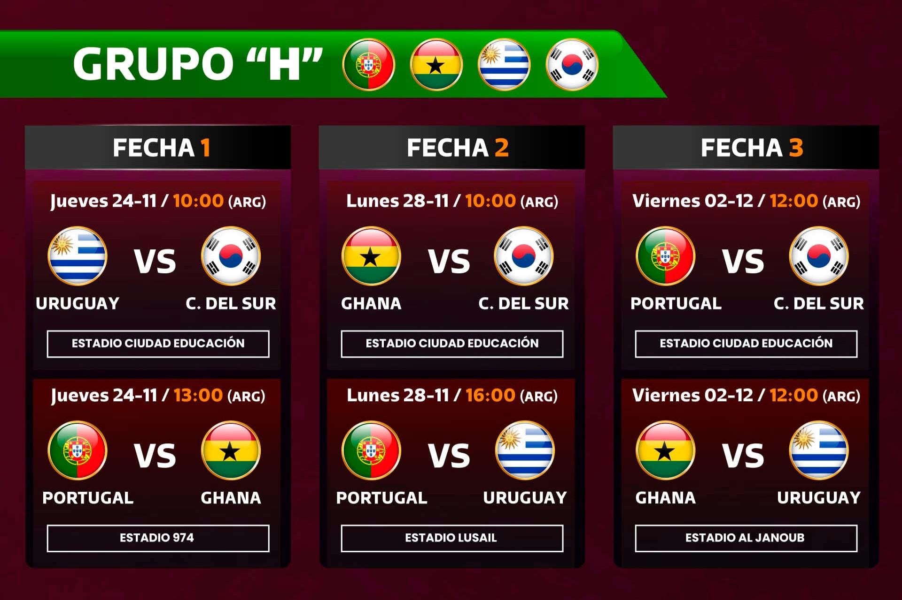
GRUPO H.
* En Sudáfrica 2010; Uruguay y Ghana protagonizaron uno de los mejores partidos en la historia de
las Copas del Mundo. Los sudamericanos avanzaron a semifinales derrotando en penales a los ghaneses.
En esta edición, los africanos tendrán su desquite.
* Portugal y Corea del Sur se verán las caras por segunda vez en la historia. Solo se
habían enfrentado una vez anteriormente, y fue precisamente en el Mundial de 2002, donde ganaron los
asiáticos por 0-1.
* Esta será probablemente la última Copa del Mundo para Cristiano Ronaldo, que cuenta con
37 años de edad.
* Los dos primeros lugares, enfrentarán a los dos primeros del Grupo G, compuesto por
Brasil, Serbia, Suiza y Camerún.
* Todas las selecciones que disputarán este grupo, se han enfrentado al menos una vez.
Estadios del Mundial
La Copa del Mundo está cada vez más cerca y con ello continúan los preparativos, uno de los más importantes
es dónde se llevarán a cabo. Encuentra aquí toda la información más relevante sobre los Estadios de Qatar
2022 para el Mundial de Fútbol.
Navega por cada uno de los artículos que hemos preparado para ti y conoce en dónde se encuentran, cuál fue
su costo, quién lo diseñó, qué partidos de la Copa del Mundo se llevarán a cabo ahí y muchas curiosidades
más. Si te ha gustado lo que preparamos para, te invitamos compartirlo.
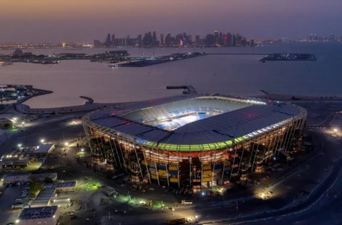
Estadio Ras Abu Aboud.
¿DÓNDE QUEDA? Doha
CAPACIDAD: 40,000 espectadores
FECHA DE INAUGURACIÓN:
30 de noviembre de 2021
¿QUIÉN LO DISEÑÓ?
El Arquitecto Fenwick Iribarren
¿CUÁNTO COSTÓ?
$230.000.000 USD
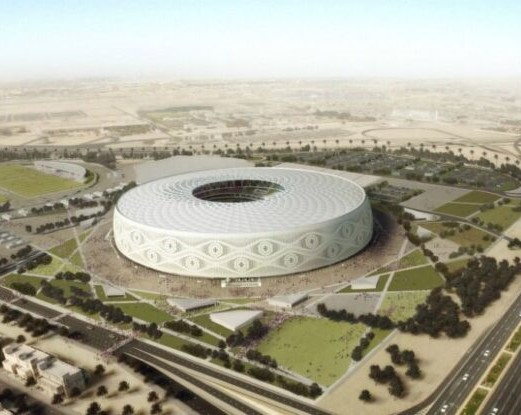
Estadio Al Zumama
¿DÓNDE QUEDA? Doha
CAPACIDAD: 40,000 espectadores
FECHA DE INAUGURACIÓN:
22 de octubre de 2021
¿QUIÉN LO DISEÑÓ?
Ibrahim M.Jaidah
¿CUÁNTO COSTÓ?
$342,000,000

Estadio Internacional Jalifa
¿DÓNDE QUEDA? Doha
CAPACIDAD: 45,416 espectadores
FECHA DE INAUGURACIÓN:
1976
¿QUIÉN LO DISEÑÓ?
Roger Taillibert y Dar Al-Handasah
¿CUÁNTO COSTÓ?
$4.000.000.000 dólares
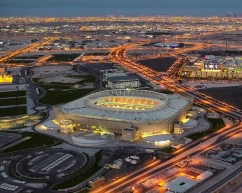
Al-Rayyan Stadium
¿DÓNDE QUEDA? Rayan
CAPACIDAD: 44.740 espectadores
FECHA DE INAUGURACIÓN:
18 de diciembre de 2020
¿QUIÉN LO DISEÑÓ?
Patter Design
¿CUÁNTO COSTÓ?
$200.000.000 de Dólares
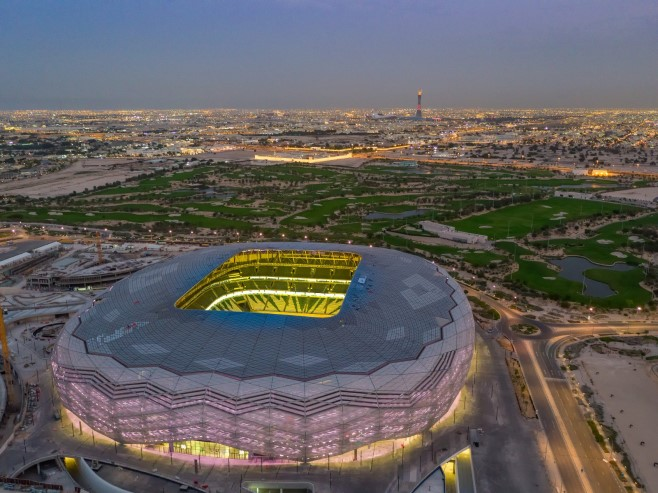
Estadio Education City
¿DÓNDE QUEDA? Rayan
CAPACIDAD: 45.350 espectadores
FECHA DE INAUGURACIÓN:
15 de junio de 2020
¿QUIÉN LO DISEÑÓ?
Mark Fenwick y Javier Iribarren (Fenwich-Iribarren Architects)
¿CUÁNTO COSTÓ?
$700.000.000 de Dólares
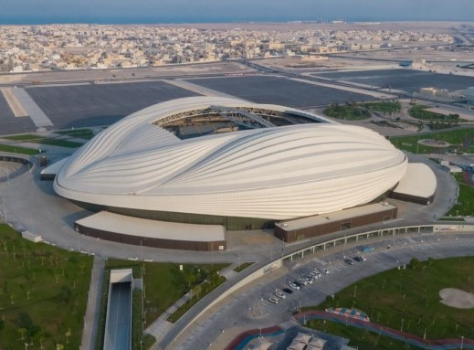
Estadio Al Wakrah
¿DÓNDE QUEDA? Al Wakrah
CAPACIDAD: 40.000 espectadores
FECHA DE INAUGURACIÓN:
16 de mayo de 2019
¿QUIÉN LO DISEÑÓ?
Zaha Hadid
¿CUÁNTO COSTÓ?
$286.000.000 de Dólares
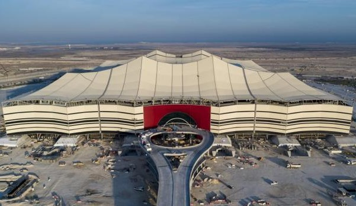
Estadio Al Bait
¿DÓNDE QUEDA? Jor
CAPACIDAD: 60,000 espectadores
FECHA DE INAUGURACIÓN:
11 de febrero de 2021
¿QUIÉN LO DISEÑÓ?
El Arquitecto alemán Albert Speer Jr.
¿CUÁNTO COSTÓ?
$674,000,000 USD
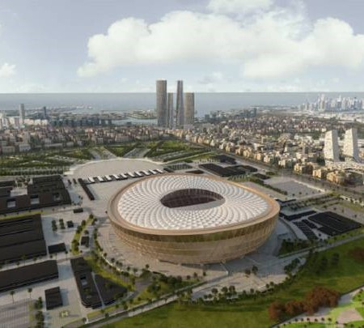
Estadio Nacional de Lusail.
¿DÓNDE QUEDA? Lusail
CAPACIDAD: 80,000 espectadores.
FECHA DE INAUGURACIÓN:
22 de noviembre de 2021.
¿QUIÉN LO DISEÑÓ?
El Arquitecto alemán Albert Speer Jr.
¿CUÁNTO COSTÓ?
$2.105.000.000 USD
Contactanos
Ubicación:
San Miguel de Tucumán, Tucumán
Email:
gerardo@gmail.com
Telefono:
+1 5589 55488 55